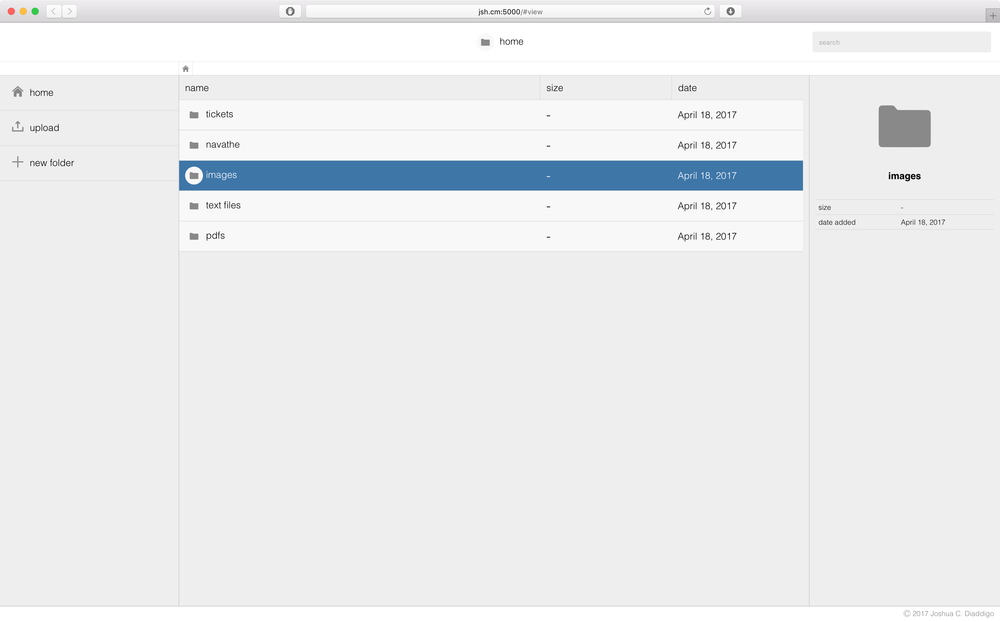
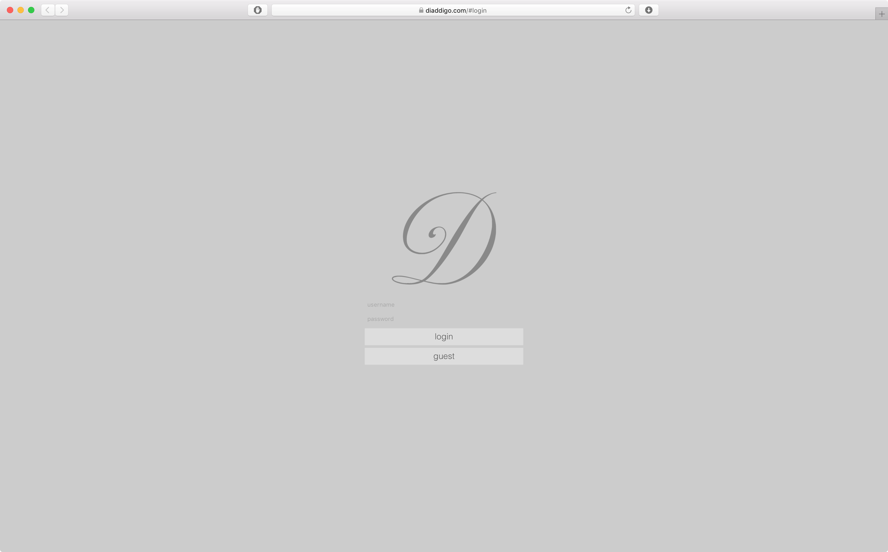
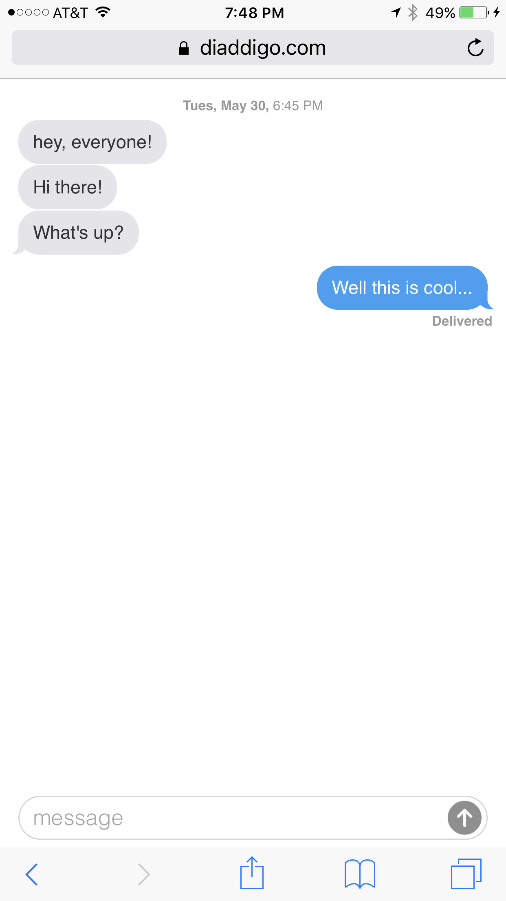

A Python module to enable autograders to better assess student programs. This module is used by Georgia Tech in the backend for their online Introduction to Computing course. Given a plaintext program, this module can stage user input and global variables, provide information about the user's syntax, and even answer more complicated questions such as the number of recursive calls made by a function for some given input. For the latter case, editing of compiled Python bytecode was necessary – an arduous, but rewarding challenge.
A web based cloud interface closely resembling Google Drive. This was a school project for which I was the architect as well as the author of the majority of the code. Features that we implemented include the following:
- Logical file structure manipulation (upload/deletion of files, add/deletion of folders)
- Viewing of PDFs, images, and raw text files
- Indexed searching
- Ease of navigation through breadcrumbs
- Presentation of file metadata

A social network for members of the Diaddigo family. Security and multiple user management were the biggest challenges that I faced which were unique to this project. Every authenticated request carries with it a one-time token (nonce) associated with a user, and the response contains a new token to be used in the next request. Users are able to manage their own password and author content to be shared with others.

A fully featured content management system for a blog that I am working on with a Belmont University marketing student, Suzanna Stapler. Backed by a SQL database, this CMS includes a very sleek HTML editor and implements security measures far beyond the typical scope of my work.

An anonymous messaging application written to assist in a card game my family often plays (called "things"). Visually, the application is hardly differentiable from Apple's iMessage. View a live instance of the application here.

A Python module I wrote for TAs at Georgia Tech – specifically those teaching courses in Python. It includes helpful scripts such as an autograder that works directly with student homework submissions and a difference checker for identifying cheaters. These scripts have been used by a few different courses at Georgia Tech, and have sent a good number of students to the Office of Student Integrity.
A (pointless) website dedicated to pictures of my buddy, Jason, eating. It also accepts photo submissions so others can join the fun. Images submitted to the site are sent to me via MMS from my server, and I can moderate them simply by texting my approval.
A library I wrote to contain a lot of the functionality I often implement first while setting up a website. This is less practical than using jQuery (or any other library), but the purpose is to learn more in the development of my projects than I would if I used a library as a crutch. A good portion of the library is also targeted towards aesthetics which I have a history of prioritizing over performance when I can get away with it.
For this project, I took the technical lead in the group of five Georgia Tech TAs I was working with. The purpose for this simulator is a little specific to Georgia Tech coursework, but the goal was to help students learn the dynamic concept of how a processor works in a fittingly dynamic fashion as opposed to simply viewing diagrams on a page. The result is a web app that allows students to upload compiled microcode for the given LC-2200 ISA and watch their program execute on the processor by microstate or by clock cycle. Through this project, we introduced a lot of features that were not previously possible for students such as backstepping through the program or only tracking the information held in specific datapath elements. View a live demo of the project here (password is "demo").

cs1301.com is a study tool that I built for my students at Georgia Tech. Previous exam questions are searchable by topic and able to be answered and checked without ever leaving the browser. This not only includes multiple choice and code reading questions, but code writing questions as well. For the code writing portions, I am using a javascript-based interpreter (Skulpt) to check solutions client-side in addition to CodeMirror to keep the writing environment clean. Feel free to check it out, as the site is open to everyone.
Lab 4 is widely regarded as one of the harder assignments in CS 1301 for good reason. The goal for this assignment was that a student who earns a good grade should go from a working knowledge of Python to a minimal level of understanding of javascript. Students are given the majority of the code for a browser based game and asked to fill in the blanks. View the assignment page here.

The debugging guide is a resource for students at Georgia Tech to begin to understand different types of bugs and how to find them. The site includes sample programs with different types of errors. Students can edit/run their solution directly in the browser and receive immediate feedback. There is also an error reference for students to research the problem they are having and quickly find an explanation.
Credits:
Josh Diaddigo
Caleb Diaddigo
Jonathan Diaddigo
Credits:
Josh Diaddigo
Jack Edman
Credits:
Josh Diaddigo
Caleb Diaddigo
Credits: imdb
|